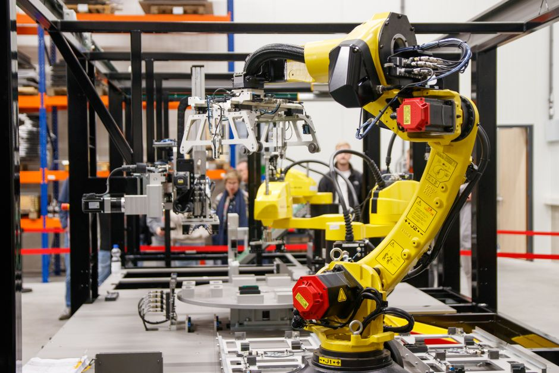

Imagine a world where powerful, precise machines work tirelessly alongside humans, building cars, assembling phones, and even preparing your favourite snacks. This isn't just science fiction; it's the reality of modern manufacturing, driven by the incredible world of industrial robotics and automation. From the bustling factories of Chennai to the high-tech plants of Pune, robots are transforming how products are made, making processes faster, safer, and more efficient. Get ready to dive into the fascinating realm where steel meets silicon, and discover how these mechanical marvels are shaping India's industrial future!
What Exactly Are Industrial Robots?
At its core, an industrial robot is an automatically controlled, reprogrammable, multi-purpose manipulator, programmable in three or more axes, which can be either fixed in place or mobile for use in industrial automation applications. In simpler terms, think of them as highly specialized, super-strong, and incredibly precise "arms" or "hands" designed to perform repetitive, dangerous, or intricate tasks in a factory setting.
They are the silent heroes behind the scenes, ensuring that everything from your smartphone to your car is built with incredible accuracy and speed. Unlike general-purpose robots you might see in movies, industrial robots are usually programmed for specific tasks, though they can be reprogrammed for new jobs, making them very versatile.
The Anatomy of a Factory Robot
To understand how these robots work, let's look at their main components:
- Robotic Arm (Manipulator): This is the most visible part, often resembling a human arm with joints (axes) that allow it to move in various directions. More axes mean more flexibility.
- End-Effector: This is the "hand" or "tool" attached to the end of the arm. It could be a gripper (to pick things up), a welding torch, a paint sprayer, a drill, or even a camera for inspection. The end-effector is chosen based on the task.
- Controller: This is the robot's "brain." It stores the programs, processes sensor data, and sends commands to the motors that move the arm.
- Sensors: Robots use various sensors to understand their environment. These can include vision sensors (cameras to "see"), force sensors (to "feel" pressure), proximity sensors (to detect nearby objects), and safety sensors (to ensure humans are safe).
- Drive System: Motors (electric, hydraulic, or pneumatic) and gears that power the robot's movements.
Types of Industrial Robots: A Robot for Every Job
Just like we have different tools for different jobs, there are various types of industrial robots, each designed for specific tasks and movements:
-
Articulated Robots
These are the most common type, resembling a human arm with multiple rotary joints (typically 4 to 6 axes). They are highly flexible and can perform a wide range of tasks like welding, material handling, machine tending, and assembly. Think of the large robots you see assembling cars – those are usually articulated robots.
-
SCARA Robots (Selective Compliance Assembly Robot Arm)
SCARA robots are known for their speed and precision in horizontal plane movements. They have two parallel rotary joints that provide compliance in the 'Z' axis (vertical) but are rigid in the 'X-Y' plane. They are excellent for pick-and-place operations, assembly, and packaging tasks where vertical movement needs to be controlled precisely.
-
Delta Robots (Parallel Robots)
Often called "spider robots" due to their design, Delta robots consist of three or more arms connected to a single base. They are incredibly fast and precise, making them ideal for high-speed pick-and-place, sorting, and packaging of lightweight items, especially in the food and pharmaceutical industries.
-
Cartesian / Gantry Robots
These robots move along three linear axes (X, Y, and Z) that are perpendicular to each other, similar to a Cartesian coordinate system. They offer high precision and rigidity over large workspaces, commonly used for pick-and-place, CNC machining, and 3D printing applications.
How Do Industrial Robots Work? Programming Their Moves
Industrial robots don't just move on their own; they need instructions! These instructions come in the form of programs. Here's a simplified look at how they operate:
-
Programming:
- Teach Pendant: This is a handheld device with a screen and buttons, used by operators to manually guide the robot arm through a sequence of movements and record each position. It's like teaching the robot by showing it.
- Offline Programming: Engineers can write programs on a computer using specialized software, simulating the robot's movements in a virtual environment before uploading the code to the actual robot. This saves time and minimizes production downtime.
- Execution: Once programmed, the robot controller takes over. It sends signals to the motors, telling them exactly how much to move each joint to reach the desired positions.
- Feedback & Control: Sensors constantly provide feedback to the controller about the robot's position, speed, and interaction with its environment. If something is off, the controller makes tiny adjustments to ensure accuracy.
- Safety: Modern industrial robots are equipped with advanced safety features, including emergency stop buttons, safety light curtains, and collaborative robot technology (cobots) that can work safely alongside humans.
While actual robot programming languages can be complex, here's a conceptual pseudocode example for a simple "pick and place" operation:
FUNCTION PickAndPlaceItem():
// 1. Move to the "pick" location
MOVE_TO_JOINT_POSITION(J1_pick, J2_pick, J3_pick, J4_pick, J5_pick, J6_pick)
// 2. Lower arm to grasp item
MOVE_LINEAR_DOWN(50mm)
// 3. Close gripper to grasp the item
GRIPPER_CLOSE()
WAIT(0.5 seconds) // Allow time for grip
// 4. Lift arm with item
MOVE_LINEAR_UP(50mm)
// 5. Move to the "place" location (often a safe intermediate point first)
MOVE_TO_JOINT_POSITION(J1_intermediate, J2_intermediate, ...)
MOVE_TO_JOINT_POSITION(J1_place, J2_place, J3_place, J4_place, J5_place, J6_place)
// 6. Lower arm to place item
MOVE_LINEAR_DOWN(30mm)
// 7. Open gripper to release the item
GRIPPER_OPEN()
WAIT(0.5 seconds) // Allow time for release
// 8. Lift arm away from placed item
MOVE_LINEAR_UP(30mm)
// 9. Move back to a "home" or "ready" position
MOVE_TO_JOINT_POSITION(J1_home, J2_home, J3_home, J4_home, J5_home, J6_home)
END FUNCTION
Where Do We See Them? Applications in India and Beyond
Industrial robots are everywhere, quietly powering the economy. In India, their adoption is rapidly growing across various sectors:
- Automotive Industry: This is perhaps the biggest user. Robots perform tasks like welding car bodies, painting vehicles with precision, assembling engines, and handling heavy parts.
- Electronics Manufacturing: For assembling tiny components on circuit boards, testing devices, and packaging electronics like smartphones and laptops.
- Food & Beverage: Sorting, packaging, palletizing (stacking boxes on pallets), and even decorating food items.
- Pharmaceuticals: Handling delicate medicines, packaging, and laboratory automation where precision and hygiene are critical.
- Metal Fabrication: Cutting, bending, grinding, and polishing metal parts.
- Logistics & Warehousing: Sorting packages, loading and unloading trucks, and managing inventory in large warehouses.
"The future of manufacturing in India is inextricably linked with automation and robotics. These technologies are not just about replacing human labour, but about augmenting human potential, creating new industries, and making our manufacturing competitive on a global scale." - A key insight into India's industrial growth.
The Superpowers of Industrial Robots: Benefits of Automation
Why are companies investing so much in industrial robots? The benefits are immense:
- Increased Efficiency & Productivity: Robots work tirelessly, 24/7, without breaks or fatigue, significantly boosting production output.
- Improved Quality & Precision: They perform tasks with incredible accuracy and repeatability, reducing errors and ensuring consistent product quality.
- Enhanced Safety: Robots can take over dangerous, dirty, or dull tasks from humans, such as welding, handling hazardous materials, or working in extreme temperatures, thereby improving workplace safety.
- Cost Reduction: While the initial investment can be high, robots reduce labor costs, waste, and improve overall operational efficiency, leading to long-term savings.
- Flexibility & Adaptability: Modern robots can be quickly reprogrammed for different tasks or products, allowing manufacturers to adapt to changing market demands.
Challenges and the Road Ahead
Despite their many advantages, integrating industrial robots isn't without its challenges. The initial investment can be substantial, requiring careful planning. Maintenance and the need for skilled technicians to program and troubleshoot robots are also important considerations. There's also the discussion around job displacement, but it's crucial to remember that automation often creates new, higher-skilled jobs in robot programming, maintenance, and system integration.
For India, the "Make in India" initiative and the push towards becoming a global manufacturing hub mean that industrial robotics will play an even more critical role. It will create a huge demand for young professionals skilled in robotics, automation, AI, and data science.
Conclusion: Building the Future, One Robot at a Time
Industrial robotics and automation are not just buzzwords; they are the backbone of modern manufacturing, driving innovation, efficiency, and safety across industries. From the intricate assembly of electronics to the heavy-duty work in automotive plants, robots are transforming the landscape of production. For students like you, understanding these technologies isn't just about knowing what's happening today; it's about preparing for the exciting careers and opportunities that will shape tomorrow.
Are you inspired by the power of factory robots? Do you dream of designing the next generation of automated systems? The world of robotics is vast and full of possibilities! Keep exploring, keep learning, and who knows, you might be the one programming the next big industrial breakthrough.
Want to get hands-on with robotics and automation? Explore MakerWorks' workshops and courses to build your skills and ignite your passion for STEM!